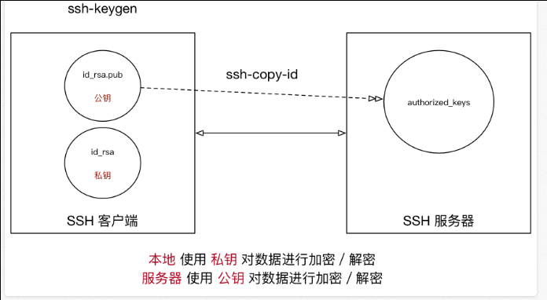
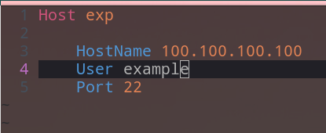
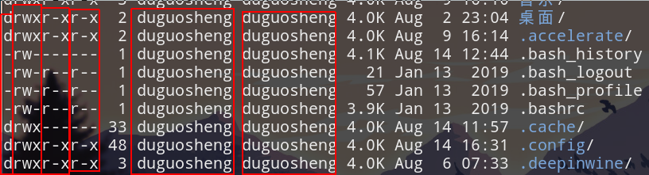
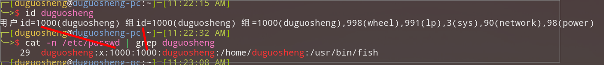
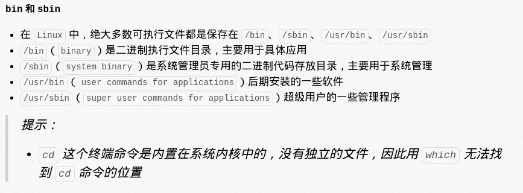
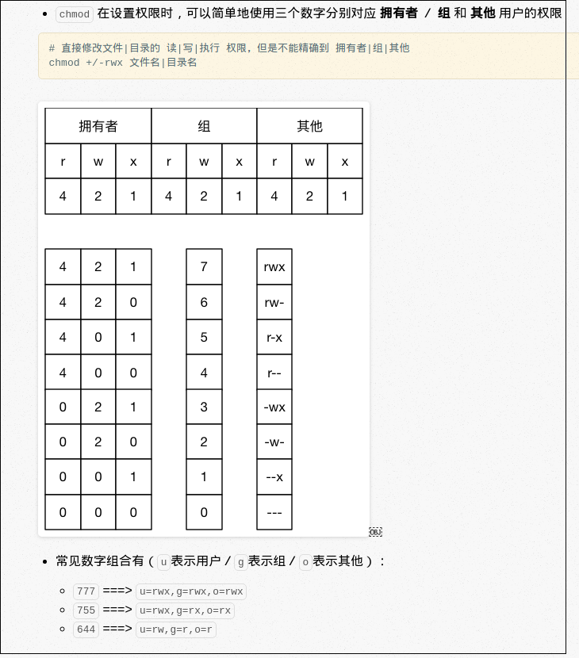
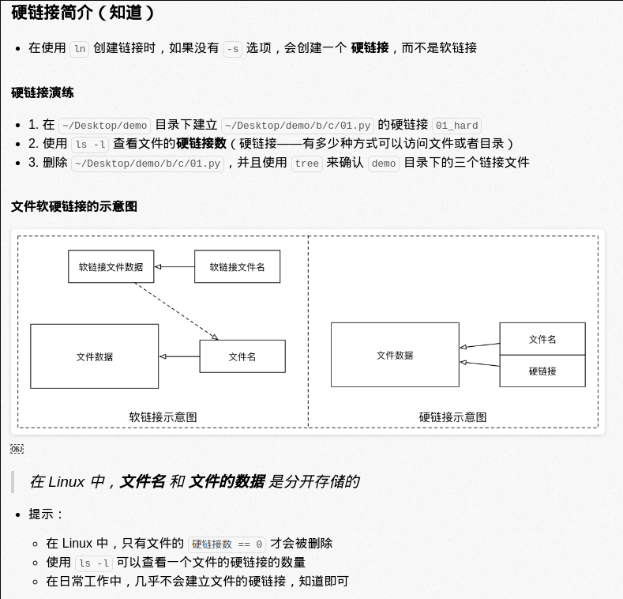

some tips
Tabcan auto compelete commandCtrl+ccan stop the command or clear your input(终止命令或清空刚才的输入–命令较长时backspace太慢)
the command format
command [-options] [parameter]
instructions
- command: command name
- [-options]: control the command, it can be omited
- [parameter]: maybe only one, or two, or three…
- []: means optional
basic command
| command | word | function |
|---|---|---|
| ls | list | view the contents of the current folder |
| pwd | print work directory | view current position |
| cd [directory] | change directory | move to the specified directory |
| touch [file name] | touch | create new file(s) |
| mkdir [directory] | make directory | create new directory |
| rm [file name] | remove | remove empty file(s) |
| clear | clear | clean the screen |
view help information
command --helpman command(means manual)
files and directory commands
- hidden files
if the file begin with a dot
.it is a hidden file .and...means this level directory..means upper level directory
ls
| options | word | function |
|---|---|---|
| -a | all | display all files(including hidden files) |
| -l | list | list display files (first letter isd:dir; -: file) |
| -h | display file size(Kb), it must be used with -l (ls -lh) |
wildcard character(通配符)
symbol meaning * represents any number of characters(任意个数字符) ？ represents one character [] give some choices examples
*ls a*display files begin withals *a.txtdisplay files end witha.txtls *a*display files containsa
** ?
ls ?a?.txtdisplay files like1a1.txt
** []
ls [abcde]ab.txtdisplay files likeaab.txtorbab.txtand so onls [a-f]ab.txtdisplay files begin withabcdeflikeeab.txt
cd
absolute path
specific path from the root directory or home directory(从根目录或家目录开始的具体路径)
example:/home/duguosheng/Desktop/relative path
the path from current directory
examples:
../Desktop/
| command | function |
|---|---|
| cd | go back to the current user home directory |
| cd ~ | just likecd |
| cd . | keep in the current directory |
| cd .. | go to the parent directory |
| cd - | switch back and forth between the last two directory |
touch (file)
if the file doesn’t exist, the file will be created
otherwise, the last modification time of the file will be modified(否则会更改文件的末次修改时间)
mkdir
create a new file
mkdir -p a/b/c/drecursively create directories(递归创建目录)the directory name can’t be same as existing file or directory
rm
- delete file or directory (can not be restore)(不可恢复)
| option | function |
|---|---|
| -r | recursively delete directory(递归删除目录) |
| -f | forced deletion(强制删除) |
copy and move files or directories
tree [directory]
display directories and files in a tree view
tree ~display files form home directorytree -donly display directories
cp
cp src destcopy fileexample:
cp ~/Documents/test.txt .copy test.txt to current directory,if you want to change file name, you can writecp ~/a.txt ./b.txt
| option | function |
|---|---|
| -i | promat before overwritting files(覆盖文件前提示) |
| -r | copy directory |
mv
move file or directory
format: mv src dest
example:
mv test ~/Documents/move test to Documents/
change file or directory name
if src and dest are under the same directory, then it can be renamed
overwrite file
if
test1.txtandtest2have been existed, then inputcp test1.txt test2.txt, after that,test1.txtwill be renamed astest2.txtand original filetest2.txtwill be deleted, this operation is unsafe
cp -i src dest
prompt before overwriting files
view file content
cat(concatenate连接合并)
format: cat (file)
view all content of the file
| option | function |
|---|---|
| -b | show line number(except blank lines) |
| -n | show line number(including blank lines) |
more
format: more (file)
view the beginning of the file
| operation | function |
|---|---|
| display next page | |
| display next row | |
| b | go back |
| f | go forward |
| q | quit |
grep
a text search tool(文本搜索工具)
| option | function |
|---|---|
| -n | show line number(行号) |
| -v | show lines which don’t match(不匹配的所有行) |
| -i | ignore case(忽略大小写) |
- example:
grep as test.txtlook for the letter as in thetest.txt
grep -n as test.txtlook for the letter as in thetest.txtand show the line number
grep -v as test.txtlook for lines that don’t contain the letter as in thetest.txt
| param | function |
|---|---|
| ^a | look for lines start with the letter a |
| ke$ | looke for lines end with ke |
other command
echo (some words)
- the words will show in the terminal, it is always used with redirect command
echo hello > aifadoesn’t exist,awill be created, and write hello inside file.(创建文件并指定内容)
redirect >and>>
linux allows to redirect command execution results to a file(linux允许将命令执行结果重定向到一个文件)
output/append the content that should be displayed on the terminal to the specified file(将本应显示在终端的内容输出/追加到文件中)
>: output, overwrite the file>>: append, append content to the fileexamples:
echo helloworld > a.txtecho ls -lh > a.txtwrite the file list and their information toa.txtecho goodbye >> a.txt
pipe | (管道)
the output of a command can be input to another with pipe(一个命令的输出可以通过管道作为另一个命令的输入)
|divides commands into left and right, left to write, right to readcommon commands
more: spilt screen display contentgrep: search for the specified content in the command execution result(在命令执行结果中搜索指定内容)
example:
ls -lha ~ | morespilt screen view files and directoriesls -lha ~ | grep aadisplay files with letter aa in its name
shutdown/restart
shutdown
shutdowncommand can safely shut down or restart the system
| option | function |
|---|---|
| -r | restart |
if the command has no options and parameters, it will turn off after 1 minute by default(默认一分钟后关机)
when remotely maintaining the serve, you’d better restart rather than shut down.
- examples:
shutdown -r now–>restart nowshut down now–>shut down nowshutdown 20:30–>shut down at 8:30pmshutdown +10–>shut down 10 minutes latershutdown -c–>cancel last command with shutdown
view and configure network card information(查看和配置网卡信息)
| command | word | function |
|---|---|---|
| ifconfig | configure a network interface | view/configure the network card information |
| ping (ip address) | ping | check the connection with target IP address is normal or not |
ifconfig
- in manjaro, use command
ip addrinstead ofifconfig - a computer may have a physical network card and multiple virtual network cards (一台计算机中可能有一个物理网卡和多个虚拟网卡)
- view ip address:
ifconfig | grep inet(ip addr | grep inetin mangaro )
ping
ping (IP)‘s working principle just like sonar(声纳), it sends out a packet, and the target IP addr returns a packet, the shorter the time, the faster the network speed(指令发出数据包，目标IP收到后返回一个数据包，这段时间越短，则网速越快)ping (IP)can check the target computer is open or not
Romote login and copy files(远程登录和复制文件)
Basics of SSH
- Based on the SSH Client and SSH Serve
- SSH Client is a software program connected to a remote computer with protocol
Secure Shell(SSH)(SSH客户端是一种使用SSH协议连接到远程计算机的软件程序) - Transmitted data is
- Encrypted(加密) –Prevent information from being leaked
- Compressed(压缩) –Increase transmission speed
Port number(端口号) and Domain name(域名)
- Port number:
- IP address: just like
172.168.12.13use it can find computer on internet - Port number: can find application running on the computer
- SSH Client default port number is
22, if it’s default port number, you can omit the port number when connecting(默认端口号连接时可以省略)
- SSH Client default port number is
- IP address: just like
| services | port number |
|---|---|
| SSH Serve | 22 |
| Web Serve | 80 |
| HTTPS | 443 |
| FTP Serve | 21 |
- Domain name: just like www.baidu.com , it use aliases for easy memory(使用别名，方便记忆)
As shown in figure,
www.baidu.comis180.97.33.107aliases, if you type180.97.33.107in the browser, also can visitBaidu
Also, you can input
180.97.33.107:80to visitBaidu, IP addr180.97.33.107to find the computer, and port number80to find its application program (web serve)
SSH Serve
- format:
ssh [-p port] user@romoteuserdefault current userromoteIP addr, Alias Or Domain name of remote computerportthe port of SSH Serve to listen, default22
- exp:
ssh -p 22 duguosheng@172.16.140.138
Tips:
scp
scpissecure copy, it be used to remote copy fileexample:
If the path after
:isn’t an absolute path, the user’s home directory is used as the reference path(:后面的路径如果不是绝对路径，则以用户的家目录作为参照路径)copy
01.pyfrom your local current directory toDesktop/01.pyin your remote home directory(把本地当前目录下的 01.py 文件复制到远程家目录下的 Desktop/01.py)scp -P port 01.py user@remote:Desktop/01.pyP is capital(大写)scp -P 22 01.py duguosheng@172.16.139.122:Desktop/<++>copy
Desktop/01.pyfrom remote home directory to01.pyin local current directoryscp -P port user@remote:Desktop/01.py 01.pyuse
-rcan copy directorydemounder current local dir –> remoteDesktop/scp -r demo user@remote:Desktopscp -P 22 -r demo duguosheng@212.134.23.123:Desktop/Desktopunder remote home dir –>demo/in local current dirscp -r user user@remote:Desktop demo
Attention:
SSH advanced
All SSH ci=onfiguration information is stroed in the
/home/user/.ssh
Password free login(免密码登录)
Steps:
Configure the public key(配置公钥)
Execute
ssh-keygento generate a public key(生成公钥), you can seeid_rsa(private key) andid_rsa.pub(public key) under~/.ssh/upload public key to Serve
Execute
ssh-copy-id -p port user@remotecan let the Serve remember our pulic key, in fact, this command copyid_rsa.pubto Serve’s~/.ssh/
Asymmetric encryption algorithm(非对称加密算法)
- Data encrypted using the public key needs to be decrypted using the private key(使用公钥加密的数据，需要使用私钥解密)
- Data encrypted using the private key needs to be decrypted using the public key(使用私钥加密的数据，需要使用公钥解密)
Configure an alias
- Steps:
cd ~/.ssh/touch configvi config- edit
config
- for example,
ssh -p 22 example@100.100.100.100can be changed tossh expby editconfiglike this
 - Also, you can use
scp -r ~/Desktop exp:Desktop/demoto copy a directory
Commands about User Premissions(用户权限)
User and Premission
- In Linux, you can specify different permissions for different files or directories for each user
- the permissions contains:
| permission | abbreviation | number |
|---|---|---|
| read | r | 4 |
| write | w | 2 |
| executive | x | 1 |
ls -l extended
- execute
ls -lhget some infomation like this

dor- |
rwx | r-x | r– | 2 | duguosheng | duguosheng | 4.0K | Aug 2 23:04 | 桌面/ |
|---|---|---|---|---|---|---|---|---|---|
d directory - file |
user permission | group permission | other people permission | Number of hard links | user name | group name | size | last version time | file or directory name |
- Number of hard links(硬链接数)
how many ways to access the current directory/file
if it is a file, the number is 1, through the path
if it is a directory without subdirectories(没有子目录), the number is 2, through the path or
cd .
if it is a directory with n subdirectories(有n个子目录), the number is 2+n, through the path,
cd .orcd ..
chmod
chmodcan change permission of user/group- format:
chmod +/- rwx fileName/dirNamethis usage will permission of both change user and group
sudo
suissubstitute user, default isroot
Group
- To facilitate user management, you can group users and then assign permissions to groups(分组，为组分配权限)
| command | function |
|---|---|
| groupadd (name) | add a group |
| groupdel (name) | delete a group |
| cat /etc/group | view group |
| chgrp -R (group_name) (dir) | change the group to which the dir belongs |
User management
create/delete user And change password
| command | function | tips |
|---|---|---|
| useraddd -m -g (groupName) (userName) | add a user | -m auto create home directory, -g specify user’s group, otherwise a group with the same name as the user will be created |
| passwd (user) | set user’s password | normal user can set set password by passwd |
| userdel -r (user) | delete user | -r will delete user’s home dir |
- if you foget to add
-m, you can delete user and recreate it - the user information is stored in the
/etc/passwd
view user information
| command | function |
|---|---|
| id (user) | view uid and gid |
| who | View a list of all currently logged in users(查看当前所有登录的用户列表) |
| whoami | view current user |
id duguoshengcat -n /etc/passwd
cat -n /etc/group
| duguosheng | x | 1000 | 1000 | duguosheng | /home/duguosheng | /usr/bin/fish |
|---|---|---|---|---|---|---|
| user | encrypted password | user id | group id | group | home dir | shell |
usermod
usermodcan be used to set the user’s primary/additional group and login shell(设置主组/附加组，和登录shell)
| command | function |
|---|---|
| usermod -g (group) (user) | change user’s primary group |
| usermod -G (group) (user) | change user’s additional group |
| usermod -s /bin/bash (user) | change user’s shell |
- Users added by default with
useradddo not have permission to use sudo to execute commands as root. Users can be added to sudo additional groups by using the following commands(默认使用 useradd 添加的用户是没有权限使用 sudo 以 root 身份执行命令的，可以使用以下命令，将用户添加到 sudo 附加组中)usermod -G sudo (user)
which
which (command) see the path of command
which lsresult:
/bin/lsbinandsbin

change user
| command | func |
|---|---|
| su | change to root(not safe) |
| su (user) | change user |
| su - (user) | change user and go his home dir |
| exit | log out |
Modify File Permissions(修改文件权限)
command func chown (user) (file/dir) change ower chgrp -R (user) (file/dir) change group chmod -R 755 (file/dir) change permission

system
time
| command | func |
|---|---|
| date | view system time |
| cal | view calendar |
| cal -y | view calendar of a year |
disk information(磁盘信息)
| command | word | func |
|---|---|---|
| df -h | disk free | show free space of disk(剩余空间) |
| du -h [dir] | disk usage | display the file size in the dir(目录下的文件大小) |
process information(进程信息)
| command | word | func |
|---|---|---|
| ps (aux) | process status | view process |
| top | Display running processes dynamically and sort them(动态显示运行中的进程并且排序) | |
| kill [-9] (process) | process can be a name or its pid, stop the process, -9 :force to stop |
- option of
psa:Display all processes on the terminal, including those of other users(显示终端上的所有进程，包括其他用户的进程)u:display details of processx:Display processes without control terminals(显示没有控制终端的进程)
Other command
find
- format:
find [path] -name "*.png"if no path, default in current directory
Softlink(软链接)
- format:
ln -s src destfileuse absolute path, don’t use relative path
Hardlink(硬链接)
- format:
ln src destfile

Packing and Compression(打包压缩)
Pack/unpack(打包/解包)
different OS has different mode of pack and compression
windows:rarmac:ziplinux:tar
tarcan pack a series of files into a large file or restore a packaged large file into a series of files(此命令可以把一系列文件打包到 一个大文件中，也可以把一个打包的大文件恢复成一系列文件)
| command | func |
|---|---|
| tar -cvf 打包文件.tar 被打包文件/路径… | pack |
| tar -xvf 打包文件.tar | unpack |
- options of tar
| option | func |
|---|---|
| c | 生成档案文件，创建打包文件 |
| x | 解开档案文件 |
| v | 列出详细过程，显示进度 |
| f | 指定档案文件，f后面一定是.tar文件，所以必须放选项最后 |
attention:
f必须放在选项最后，其他随意tar只负责打包，不负责压缩
compression/decompression(压缩/解压)
gzip
tar与gzip结合可实现打包压缩- 用
gzip压缩tar打包后的文件，扩展名一般用xxx.tar.gz - 在
tar命令中，有一个-z选项可以调用gzip
1 | # 压缩文件 |
bzip2
tar与bzip2结合可实现打包压缩- 用
bzip2压缩tar打包后的文件，扩展名一般用xxx.tar.bz2 - 在
tar命令中，有一个-j选项可以调用bzip2
1 | # 压缩文件 |